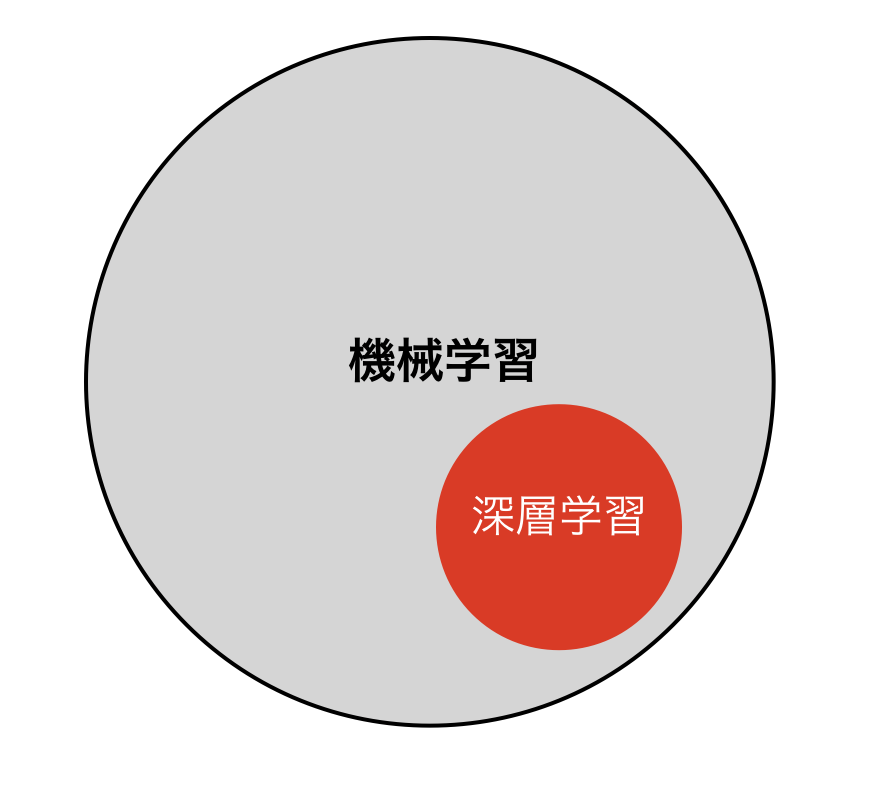

2.学習内容
JetRacerでは、走行用の推論は、ResNetの転移学習でおこないます。
データセット規模は、標準コースでCollision Avoidanceで50*2枚、Road Followingで、100枚程度必要です。
| サンプル | データセット数 |
|---|---|
| Collision Avoidance | 50枚*2パターン |
| Road Following | 100枚 |
学習の位置づけ

| 手順 | 対応 |
|---|---|
| 教師あり学習 | ○ |
| 教師なし学習 | |
| 強化学習 |
今回は、教師あり学習の転移学習を用いてコースの学習をおこないます。
転移学習
転移学習で用いる学習済みモデルは、AlexaNetとResNetです。AlexaNetとResNetの学習済みモデルに、新たな層を追加し、学習させる事で、JetBotの自動走行を実現します。
| サンプル | 論文 |
|---|---|
| Collision Avoidance | AlexaNet |
| Road Following | ResNet |